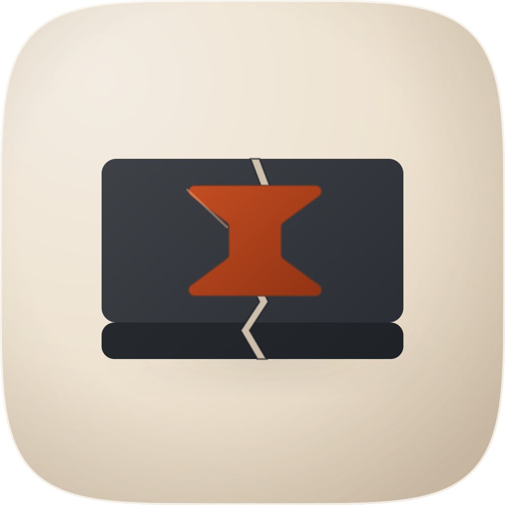
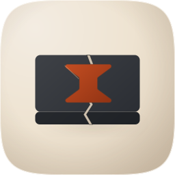
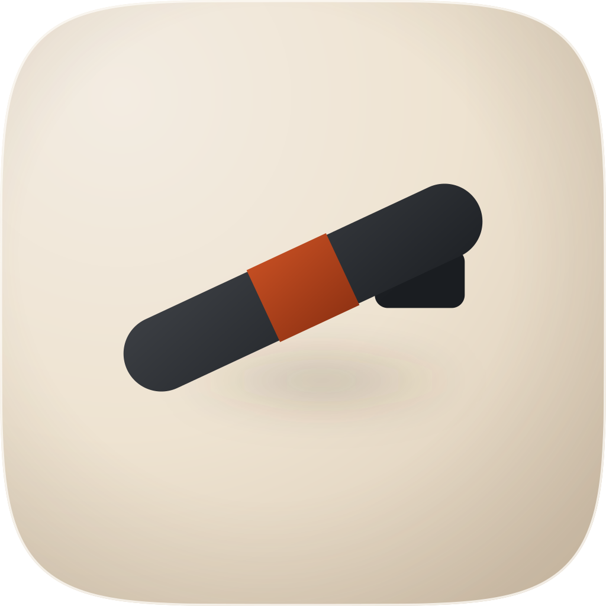
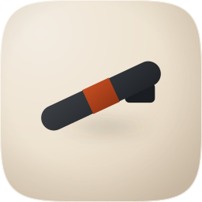
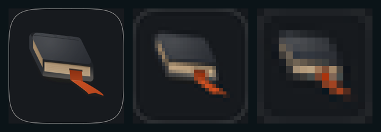
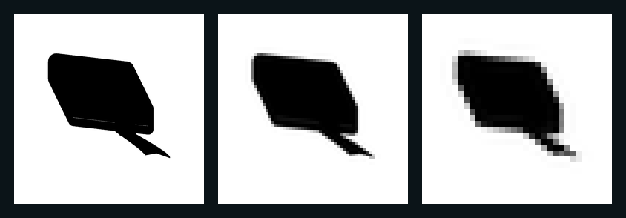
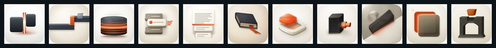

Direction “The Kept Place” — Tahoe gel-glass, porcelain sub-register, one dark object on a warm cushion with a single vermilion accent. Four takes, all with artifacts on disk, audited on real renders at 1024 / 128 / 64 / 48 / 32 / 16 and scored against this marketplace’s twelve-point rubric on 2026-08-19. The device: a closed bound ledger lying on the cushion, seen in a mild oblique from above and in front, with a register ribbon slipping out from between the leaves at the fore-edge, folding over the edge and lying flat on the tile. The signature move is that crossing — the ribbon is the one thing that leaves a shut session, and it is the only saturated element on the tile.
A · ships · 1024 sourceD · the material target
The four takes on this commission, with their renders, their twelve-point rubric scores and the verdict behind each
Take
Hero at 1024, then renders at 128 / 64 / 48 / 32 / 16 css px (2× retina sources), plus the 16px squint magnified
Rubric
Verdict
A · icon.svgEngine A, hand-authored layered SVG from build_icon.py — SHIPS
hero 10241286448321616 ×6
11 / 12
Clears all four non-negotiables on real renders. The casting measures 8.11:1 against the ground by patch and 7.88:1 by ring; the ribbon 3.58:1 by patch and 3.09:1 by ring, against the 1.03:1 of the coupler it replaces. Ink 661×567 (64.6% of the tile), margins L182 R181 T211 B246. 16px contrast 0.2178 against a family median of 0.1981. Nearest shelf neighbour 0.707.
The one fail is #7, on the page block: 3.42:1 against the boards that flank it but 1.97:1 against the tile. Scored a fail to stay consistent with mac-craft, which published its own mid-tone shortfall rather than lightening the ground; a reviewer scoring #7 on the glyph would read this take as 12/12. Every check is walked through under the table.
B · icon-alt-key.svgEngine A widened, hand-authored — lost

hero 1024

1286448321616 ×6
9 / 12
“The Dovetail Key” — a graphite board parted by a split, the break bridged by a vermilion butterfly key. The most literal reading of “carried across a break” on this sheet, and it lost on three measurements.
#7 figure-ground — fail. The board is 9.13:1 against the ground, and the key’s only boundary is against the board it is set into: 1.94:1. An accent inside a dark body borrows the body’s edge to be seen, which works, but the measured ratio is under the bar and there is no second boundary to raise.
#8 depth coherence — fail. The split is drawn dark on one flank and pale on the other, which is the signature of a raised bar, not a cut. mac-craft recorded the rule this breaks: a valley is darker at both edges with its bright zone off-centre toward the key.
#11 personality — fail, and this is the decisive one. The break is invisible below 128px, so what survives is a symmetrical warm hourglass on a dark card. Its 16px signature correlates 0.891 with shipyard and 0.836 with better-goal — over the 0.80 shelf bar, so it is not ownable in this set whatever its own numbers say. The twelve-point rubric has no check for that, which is the finding better-loop recorded; the shelf measure is what caught it.
Its 16px contrast (0.2639) is the second-highest here, bought with 22.7% of the tile in dark mass — a reminder that the statistic rewards area and is blind to whether the device reads.
C · icon-alt-baton.svgEngine A widened, hand-authored — lost

hero 1024

1286448321616 ×6
9 / 12
“The Handed Baton” — the carried object itself, resting half out of its seat, with a vermilion collar at its waist.
#3 silhouette — fail, and it is non-negotiable. Filled solid black it is a rounded bar with a step, and what it names is a cigarette or a marker pen. The handover is nowhere in the outline.
#8 depth coherence — fail. The graphite chock reads as a separate lump behind the baton rather than a seat it rests in, and the single ellipse of shadow does not follow the body’s length.
#11 personality — fail. A dark bar with a warm band across it is better-loop’s own construction, differing here only in orientation.
Worth keeping for one reason: its numbers are the best on the sheet and its picture is the worst. Accent figure-ground 4.40:1 and dark mass 10.07:1, both the highest here, on 8.1% of the tile in dark mass — and 16px contrast 0.1774, below the family median. Good ratios on a mark that says nothing.
D · icon-raster-c1.pngEngine C, GPT Image 2 with four corpus references — the material target, never the master
hero 10241286448321616 ×6
9 / 12
The best material on the sheet and unshippable, which is the normal result for this engine.
#2 grid — fail. 795×667 of ink, 77.6% of the tile wide, well outside the 55–65% band; margins L110 R119 T190 B167.
#7 figure-ground — fail. Its ribbon measures 3.52:1 against clean ground by a patch pair and 1.95:1 by the dilated ring; the disagreement localises the defect exactly — one flank of the ribbon is the dark board, not the tile. Its page block is 1.46:1 against the ground and its cover 6.04:1 by the ring.
#10 variant robustness — fail by construction. A flat raster with a baked ground, baked vignette and baked shadow: nothing to remap, which is the corpus’s single most common failure mode.
What it settled, and what was taken from it. Briefed once, it produced the same object the master draws — so the device needed no defending. Three of its measurements were then authored straight into the master: the page block is a warm tan at Y 0.397 rather than an ivory (authored near-white it dissolves, which is how the predecessor lost half its composition); its ribbon sits at Y 0.132–0.138 on the lit faces, which is why the master’s accent was taken down from 0.205 to 0.152; and its ground runs 0.804 at the upper left to 0.590 at the lower right, confirming the family’s key bearing. Its broader seat shadow and its soft cover sheen were the two material gaps the master closed afterwards.
The twelve checks on the shipping take
Every number sampled off audit-renders/A-1024.png and the small renders in row A.
Mask discipline — pass. Clipped to the family squircle-path.txt; the four corner pixels are fully transparent and no shadow is drawn outside the mask.
Grid — pass. Ink 661×567, 64.6% of the tile wide (inside the 55–65% band, at its top); margins L182 R181, so centred to one pixel, T211 B246 — a 17px optical lift.
Silhouette — pass, narrowly. Filled solid black (strip below) it is a thick oblique block with a notched tail: nameable as a shut book with a marker, though the book reading comes from the internal values rather than the outline. Same standard as the family’s other cast solids.
16px squint — pass. The dark mass, the tan page band and the warm ribbon all survive to the 16px cell. The ribbon is 110px wide on a 1024 canvas — 1.72 display px at 16px, over the 1.5px floor this skill measured on better-goal. 16px contrast 0.2178 against a family median of 0.1981 (n=38).
Single light model — pass. One key at bearing 48°. Every face’s value comes from a Lambert term against one world vector — top 0.052, left (head) face 0.049, near (fore-edge) face 0.027 — both cast shadows are offset along that same axis, and the rim catch’s opacity dies along it.
Palette economy — pass. Two families: a warm one (ground hue 34–36, pages hue 32–34, accent hue 16) and a cool near-neutral graphite (hue 214–218 at saturation 0.12–0.20). The vermilion is reserved for the ribbon and nothing else; accent area 2.15% of the tile.
Figure-ground — fail, recorded rather than hidden. The two load-bearing objects clear the bar comfortably: the casting is 8.11:1 against the ground by a clean patch pair and 7.88:1 by the dilated-ring measure, and the ribbon 3.58:1 by patch and 3.09:1 by ring. The page block does not: 3.42:1 against the boards that flank it, but 1.97:1 against the tile. It is an interior feature whose boundary is the boards’, and the grayscale strip below shows it surviving — so a reviewer scoring #7 on the glyph would pass it and read this take as 12/12. Scored as a fail here to stay consistent with mac-craft, which recorded its own mid-tone face’s 1.76:1 shortfall as a fail rather than lightening the ground to hide it.
Depth coherence — pass. Two seat shadows (tight at 0.32, wide at 0.72 through a 34px blur) offset along the key; the page block recessed 22px behind the boards with its own occlusion under the cover’s lip; the ribbon’s run carrying a shadow of its own; every face clipped to one rounded silhouette so no corner escapes it.
Era coherence — pass. One register throughout: cushion ground with an inner rim light and an edge vignette, matte-satin body with a soft top bloom at the key’s own bearing, soft occlusion, no hard speculars.
Variant robustness — pass, on a probe rather than an assertion. Four real depth groups (bg / mid / fg / highlight). Swapping only the bg group to charcoal and touching nothing else (probe below) leaves the mark legible at 256, 32 and 16px, because the page block and the ribbon carry the identity once the cover no longer separates by value. In grayscale the ribbon stays a visibly darker tail.
Personality — pass. The nameable device is the ribbon crossing the shut cover’s fore-edge: a fold with a lit rolled edge, a slot it emerges from, and a swallowtail on the tile. Ten leaf lines on the fore-edge and three raised spine bands are the supporting detail. Nothing here is glyph-on-gradient.
No-text — pass. No words, no screenshot, no monogram. The leaf lines are page edges.
Recommendation: ship A (icon.svg), at 11/12. It clears all four non-negotiables on real renders, it is the only take whose device is both legible at 16px and unlike anything on the shelf (nearest neighbour 0.707), and its two decisive relations are measured: the casting at 8.11:1 against the ground and the accent at 3.58:1, against a predecessor whose signature device measured 1.03:1. The master is real layered vector — 50 paths, 20,153 bytes, four named depth groups, fidelity.py structure PASS — so the ground can be swapped without losing the mark, which the dark probe below demonstrates rather than claims. Known liabilities, in the order they would be fixed:(1) the page block is 1.97:1 against the tile and is carried by the boards flanking it, not by its own boundary — the one number here under the 3:1 bar, and the reason this take is 11/12 and not 12; (2) the signature crossing does not survive to 16px — at that size the ribbon is a warm mark beside a dark block, so the icon reads as “a book with a bookmark” and not as the fold; (3) the ink is 64.6% of the tile wide, at the top of the band, so any future accent cannot grow without breaking #2; (4) the swallowtail’s tip is 30px at its narrowest, which is under half a pixel at 16px and simply tapers away; (5) a closed book is a conventional object for “record”, and what makes this one specific is the ribbon crossing the shut edge — if that detail is ever simplified away, the tile becomes a generic documents icon. What this sheet does not claim: no fidelity loop ran, no blind judge panel ran, and there is no loop-runs/ directory in this plugin. The raster was used as a measured reference by hand, take by take, and every figure quoted here is reproducible from the four 1024px renders in audit-renders/.
Engines: two of three ran, and the third is named rather than skipped. Engine A (hand-authored layered SVG) was widened to three genuinely different devices — the ledger, the dovetail key and the baton — because Engine B was unavailable: the Arrow 1.1 vector route returned A positive credit balance is required for all requests, including BYOK from its gateway and produced no file. Engine C ran on the default route (GPT Image 2) with four porcelain-register corpus references — apple-12 (Calculator), apple-23 (Safari), apple-28 (Photos), apple-18 — and is take D. So this sheet carries four takes from two engines, and no take on it is a description of something that was not built.
Colour beside grayscale, at the sizes where it matters
Each pair is the same render, magnified nearest-neighbour: colour on the left, grayscale on the right. It is the evidence behind #7 and #10 — with the hue removed the casting stays a dark mass, the page block stays a mid band between two darks, and the ribbon stays a visibly darker tail on the ground rather than flattening into it.
The #10 probe: only the background group swapped

The bg group’s ground and vignette replaced with a flat charcoal, every other layer untouched, at 256 / 32 / 16px. The mark survives because identity sits in the page block and the ribbon as well as in the cover’s value — a Dark variant would still want the casting’s ramp lifted, but nothing here is hostage to the porcelain.
The silhouette test

Filled solid black at 256 / 64 / 32px. A thick oblique block with a notched tail — nameable, and asymmetric enough to be its own shape, though the book reading comes from the internal values. This is the narrow pass recorded at #3.
On the shelf, at 96px

should-compact, better-loop, braindump, clarify, report, resume-session, create-mac-icon, proctor, improve-skill, mockup-fidelity, whats-left. This strip is where the accent’s luminance was settled: the ribbon carries the family’s shared accent lightness (HSL L 0.44) with its own hue point (16° against the family median 17°), so it reads as the same ember rather than as brown — a check that exists nowhere inside the tile.
Measured, not eyeballed
Measurements taken from the four 1024px renders
Reading
A · ships
B
C
D · raster
Bar, and the predecessor
dark mass vs ground (dilated ring)
7.88:1
9.13:1
10.07:1
6.04:1
#7 bar 3:1 — predecessor 5.65:1
dark mass vs ground (patch pair)
8.11:1
—
—
7.72:1
apple-12 measures 8.1:1
accent vs its surround (ring)
3.09:1
1.94:1
4.40:1
1.95:1
the coupler it replaces: 1.03:1
accent vs clean ground (patch)
3.58:1
—
—
3.52:1
#7 bar 3:1
page block vs the boards
3.42:1
—
—
—
the boundary the eye uses
page block vs ground
1.97:1
—
—
1.46:1
the register's ceiling — scored a fail
ink bounding box
661×567 (64.6%)
616×410 (60.2%)
610×354 (59.6%)
795×667 (77.6%)
#2 band 55–65% — predecessor 60.6%
safe-zone margins
L182 R181 T211 B246
L204 R204 T320 B294
L207 R207 T309 B361
L110 R119 T190 B167
centred, with an optical lift
dark mass / accent area
14.6% / 2.15%
22.7% / 3.76%
8.1% / 1.89%
24.2% / 1.70%
accent bounded, one place
accent hue / saturation / Y
15.9° / 0.84 / 0.152
15.7° / 0.84 / 0.123
15.7° / 0.84 / 0.123
11.9° / 0.85 / 0.110
family median hue 17°, Y 0.24
16px contrast (RMS)
0.2178
0.2639
0.1774
0.2668
family n=38 median 0.1981 — predecessor 0.1945
nearest shelf neighbour
0.707create-mac-icon
0.891 shipyard
0.653 ship-armada
0.814 better-goal
bar 0.80 — predecessor 0.658
fidelity.py structure
PASS · 50 paths, 20,153 bytes, 4 named groups
PASS
PASS
n/a (raster)
≤400 paths, ≤200KB, layer plan present
What stood here before, and why this sheet is the third version of it. The sheet shipped with the original commission was fabricated: three rows scored 14/14, 11/14 and 10/14 against a fourteen-point rubric that is not this marketplace’s, where rows “B · Flat Vector Take” and “C · Pure Raster Reference” had no artifacts behind them at all, and every image on the page was one of the shipped exports — so all three rows displayed take A and the page compared the icon with itself. Its prose also described a “golden filament” the artwork did not contain. On 2026-08-19 that sheet was replaced by an honest one-row record which scored the shipped icon 8/12 and published the numbers behind it: the graphite card 5.65:1, the right-hand card 1.48:1, the coupler node that carried the whole concept 1.03:1 and gone by 16px, the two badges 1.26:1 and 1.74:1, ink 60.6% of the tile. This sheet supersedes that record and keeps its account: those measurements are what the icon was rebuilt against, and the row above is a different icon, not a rescoring of the old one. The old master, its exports and its build script were all replaced in this commission; nothing of the 8/12 tile survives except the concept it was reaching for — a session handed from one context to another — which is why the device changed rather than being re-shaded.
Rubric: the twelve-point icon audit from icon-directions.md (mask discipline, grid adherence, silhouette, 16px squint, single light model, palette economy, figure-ground, depth coherence, era coherence, variant robustness, personality, no-text) — checks 1–4 non-negotiable, delivery bar ≥10/12. Renders produced by python3 audit_sheet.py render <dir> at 1024 / 256 / 128 / 96 / 64 / 32 sources through rsvg-convert, displayed at 128 / 64 / 48 / 32 / 16 css px and verified by its check subcommand; audit-renders/render-manifest.json records each take’s source and kind, and take D is recorded as raster-mask because its source is a full-bleed square. Contrast figures are WCAG relative-luminance ratios: the ring measure compares a mask’s median against the median of a 45px dilation of it, and the patch measure compares two 24px means either side of the boundary that matters — both are quoted because their disagreement is what localises a defect. The 16px contrast figure is the RMS of gamma-encoded relative luminance on the 16px downsample composited over white, and the family figure was measured over all 38 marketplace icons on 2026-08-19; quoted with its definition because linearising first moves every number without changing the ranking. The shelf figure is the mean-centred normalised luminance correlation of the 16px renders, from shelf_check.py.